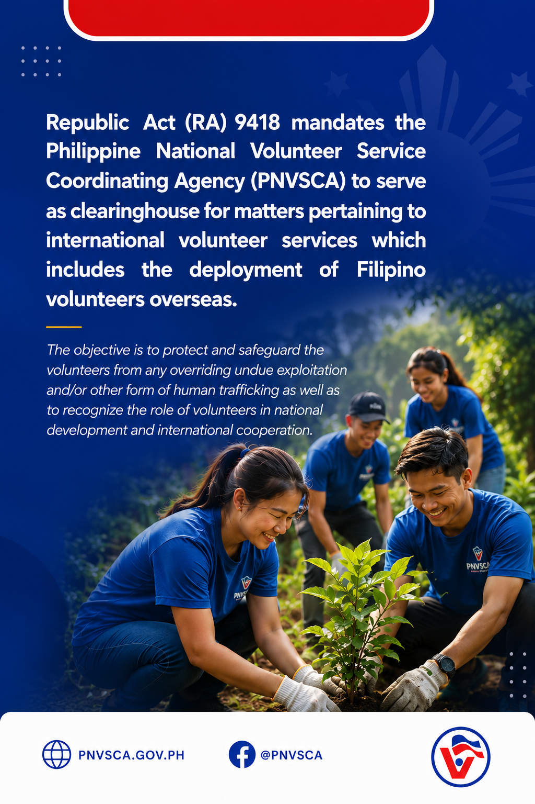

ABOUT PNVSCA
Building a Culture of Volunteerism Across the Philippines.
The Philippine National Volunteer Service Coordinating Agency (PNVSCA) serves as the government's lead agency in promoting volunteerism as a catalyst for nation-building, sustainable development, and active citizenship.


OUR STORY
Promote Volunteerism
Build Strong Partnerships
Empower Communities
Encourage Active Citizenship
Inspiring Filipinos to Serve Beyond Themselves.
Volunteerism has long been part of Filipino culture, deeply rooted in the spirit of Bayanihan. The Philippine National Volunteer Service Coordinating Agency continues to strengthen this tradition by creating opportunities where individuals, organizations, educational institutions, and communities work together for sustainable national development.
Through responsive leadership, meaningful partnerships, and innovative volunteer programs, PNVSCA empowers every Filipino to become an active participant in building resilient communities and improving lives.
AT A GLANCE
PNVSCA in Numbers
1979
EstablishedNationwide
Community ReachGovernment
Lead AgencyThousands
Volunteers Mobilized
OUR PURPOSE
Guided by Purpose, Driven by Service.
Our Mission and Vision serve as the foundation of every initiative, partnership, and volunteer engagement that PNVSCA undertakes throughout the Philippines.
Our Mission
Promote and harness voluntary services and resources through responsive policies, technical assistance, advocacy, coordination, and strategic partnerships that strengthen volunteerism as an effective instrument for national development.
Our Vision
A leading institution that inspires, coordinates, and advances volunteerism toward a self-reliant, compassionate, empowered, and progressive Filipino society.
CORE VALUES
Principles That Define Every Volunteer.
Integrity
Upholding transparency, accountability, and ethical public service.
Excellence
Delivering quality volunteer programs and responsive public service.
Compassion
Serving communities with empathy, respect, and dignity.
Collaboration
Building meaningful partnerships among government, organizations, and volunteers.
Innovation
Embracing creative and sustainable volunteer initiatives.
Patriotism
Inspiring every Filipino to contribute toward nation-building.
OUR JOURNEY
Milestones That Shaped Our Mission
Through decades of service, PNVSCA has continuously strengthened volunteerism and expanded partnerships that create meaningful impact across the Philippines.
1979
PNVSCA Established
The Philippine National Volunteer Service Coordinating Agency was officially created to coordinate and promote volunteerism nationwide.
1990s
Expansion of Volunteer Programs
Partnerships with local government units, educational institutions, NGOs, and civic organizations continued to grow nationwide.
Today
Inspiring Active Citizenship
PNVSCA continues promoting volunteerism as a catalyst for nation-building, resilience, and sustainable development.
Together, We Can Build Stronger Communities.
Volunteerism begins with one step. Join PNVSCA and become part of a nationwide movement creating positive change.
Success
Notification